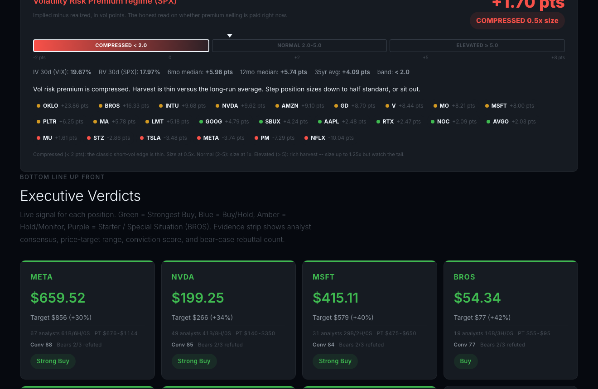
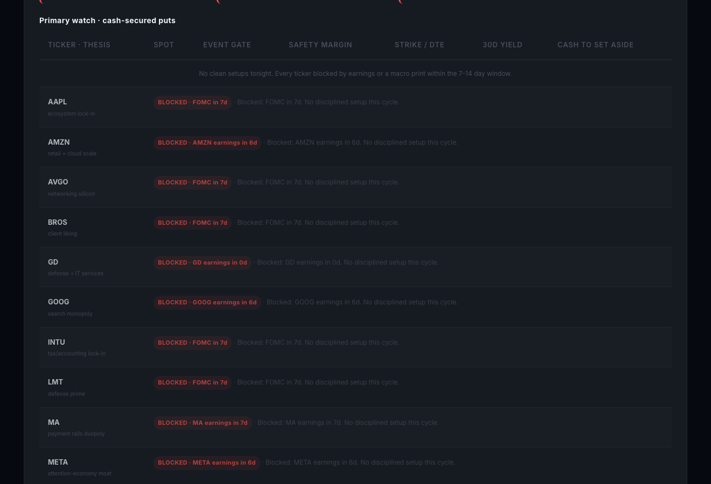

A free public web dashboard scoped to one strategy: selling options premium on a curated watchlist of names you already know. You open it in a browser, scan it for under two minutes, and decide. It never tells you what to do.
No login. No account. No download. Updated automatically twice every weekday during US market hours, then left alone overnight. Anyone with the link sees what Mike sees; nothing on the public surface is personalized.
| Basket | Tickers |
|---|---|
| Mega-cap tech the original 9 |
MU, META, NVDA, MSFT, AMZN, GOOG, AAPL, TSLA, BROS |
| Defense primes | LMT, RTX, NOC, GD, PLTR |
| Addictive consumer staples | PM, MO, STZ, SBUX, NFLX |
| Payment rails and infrastructure | V, MA, INTU, AVGO, OKLO |

It shows you which options you could sell today on a curated watchlist of stocks, with passive visual cues highlighting the high-yield, the about-to-expire, and the earnings-blocked, so you can decide for yourself.

A thin daily email accompanies the run, but only when something has materially changed since the last update. Most days, no email is sent. The default is silence.
Mike's advisory group already has Bloomberg, broker research portals, retail option screeners, and decades of pattern recognition. The dashboard does not try to compete with any of them on coverage. It competes on scope and posture.
| You already have | What it gives you | Where this dashboard differs |
|---|---|---|
| Bloomberg, broker research portals | Encyclopedic coverage. Everything about everything. | Opinionated about the universe and the strategy. Less surface area, more actionability. You stop scrolling sooner. |
| Retail option screeners Barchart, OptionStrat |
Screen the entire option universe by criteria. | Scoped to twenty-four names you already follow. Chaos-aware: rows are flagged by event proximity and liquidity, not just sorted by yield. |
| Analyst research, newsletters | Tell you what to buy. | Never tells you what to do. Surfaces the live options market and lets you decide. |
| Roll-your-own spreadsheets | Exactly what you want, until you stop maintaining them. | Autonomous. Fresh every market session without a human in the loop. |
A competent secretary does not tell the boss what to do. She knows everyone in the room, has the agenda ready, anticipates needs, and makes the boss's day flow.
This dashboard is that secretary, scoped to options selling. It pulls the chains. It blocks earnings-spanning expirations. It flags compressed volatility regimes that should shrink position sizing. It surfaces Thursday-optimal weekend-theta candidates. It tells you nothing about what to trade.
That posture matters more than any single feature. A Bloomberg-using professional who reads "buy this, sell that" three hundred times a day has every reason to ignore the three-hundred-and-first source. A surface that earns ninety seconds of attention is a surface that respects the operator's judgment.
It is Thursday, 10:35 AM Eastern. Mike opens the dashboard on his phone over coffee.
The regime tile reads VRP compressed, 0.5x size. He internalizes that. Whatever he writes today, he writes half size.
He scans the Option Selling Watch table. Nineteen of twenty-four rows are flagged red: FOMC in 7d. No disciplined setup this cycle. Three rows are flagged for individual earnings within the window. Two rows are clean.
Both clean rows carry a THU-OPT badge: today is Thursday and a next-Friday expiry exists, which means the contract decays through a weekend without market hours. Sellable.
He taps the higher-yield row, opens his broker on the same phone, places a half-size cash-secured put. Done.
Total elapsed time: ninety seconds. The dashboard never told him to trade. It told him which rows were not blocked and which carried the weekend-theta tailwind. He decided.
The public dashboard never shows holdings, share counts, cash balances, cost basis, or assignment events. None of that is on the URL above and none of it ever will be. Personalization, when it exists at all, happens only in a private email path the reader opted into.
The tool drafts no emails on its own without review. It places no trades. It has no broker connection. It moves no money. It is a read-only artifact rendered to a static page, plus a private email draft that Andrew reviews before sending.
Disclosures: the dashboard is educational and is not financial advice. Every reader makes their own decisions. The site carries explicit "limitations" copy in its header for the same reason.
The pattern generalizes. One strategy, a curated watchlist, an autonomous pipeline, a scannable single page, no opinions. If a member of the group wants a version scoped to their own universe and strategy (covered calls on dividend names, cash-secured puts on industrials, calendar spreads on commodity ETFs), the build is straightforward.
Andrew McAteer | mcateerandy@gmail.com | promptaisolutions.com | promptaisolutions.com/stock-analysis/